四维流形的相交形式 (Intersection Form)
1 Preparation
对于任意紧的(可能带边), 定向的 4-流形 M^4, 我们可以定义其上的相交形式.
我们主要关心闭的 4-mfld 上的结果. 为了理论的完整性, 我们也会指出带边界情形的差异. 若第一次接触, 不妨直接略过后者.
- 观点 (M 不带边界)
- 如何使用”几何”的观点看待定向紧流形 M^n 的同调和上同调?
- 上同调:
- 由 De Rham 上同调理论, 我们知道流形上的微分形式具有链复形的结构. De Rham 定理指出这个复形的上同调群与实系数奇异上同调群同构.
- 含入映射 \mathbb{Z}\hookrightarrow\mathbb{R} 诱导出上同调之间的”含入”(未必单射)映射 H^k\left(M;\mathbb{Z}\right)\to H^k\left(M;\mathbb{R}\right), 于是对于一个 H^k\left(M;\mathbb{Z}\right) 中的元素, 我们考虑它在 H^k\left(M;\mathbb{R}\right) 中的像, 从而将其视为一个 k-form.
- 同调:
- 由同调的定义, 我们不妨将其视为 M 上光滑定向闭子流形的整系数线性组合.
- 定向: 考虑单纯同调的定义(三角刨分), 不定向的流形的三角刨分无法自相消, 故不是 cycle. 但在 mod 2 意义下可以相消, 故可以对应到 H_k\left(M;\mathbb{Z}_2\right) 中的元素.
- 我们可以给出更精确的定义: 对于子流形 X^k, 嵌入映射 X^k\hookrightarrow M^n 诱导同调群之间的映射 H_k\left(X\right)\to H_k\left(M\right), X 的基本类 [X] 在这个映射下的像就是子流形 X 在 M 的同调群 H_k\left(M\right) 中的元素.
- 一般来说, H_k(M) 中的每个元素未必都可以由某个 k 维闭子流形表示。
- 由同调的定义, 我们不妨将其视为 M 上光滑定向闭子流形的整系数线性组合.
- 配对:
- 我们知道, M 上次数相同的同调和上同调可以配对 (UCT).
- 从”几何”的角度来看, 这就是将微分形式 (k-form \omega) 在底流形 X^k 上做积分 \int_X\omega .
- 综上: 同调是定向闭子流形, 上同调是微分形式, 配对是做积分.
- 带边界的版本
- 上同调 H^k\left(M,\partial M\right): 在边界上为零的微分形式
- 同调: H_k\left(M,\partial M\right)
- H_k\left(M\right) 中的元素是 closed embedded submfld, 要求 closed 是因为同调中的元素必须在边缘算子的作用下消失.
- H_k\left(M,\partial M\right) 中的元素是 Properly Embedded Submanifold (即子流形与边界横截相交, 且 \partial X = X \cap \partial M), 此时即使子流形 X 带边界, 由于它的边界落在了 \partial M 上, 故在同调的意义下被视为 0.
- 基本类与庞加莱对偶:
- 基本类:
- 对于定向流形 M^n, 我们有 H_n\left(M,\partial M;\mathbb{Z}\right)\cong\mathbb{Z}, 我们选取这个群的一个生成元, 在”几何”的观点上看, 这个群的生成元就是 M 的一个 n 维定向子流形, 就是选取了 M 上的一个定向. 这个生成元被称为 M 的基本类，记为 [M], 它与 M 的定向的选取是一致的.
- 庞加莱对偶 (不带边界)
- PD: H_k\left(M\right)\to H^{n-k}\left(M\right),\alpha\mapsto PD(\alpha)\left(=\omega\right)
- 在”几何”上看就是把 \alpha 对应的子流形 X_{\alpha}^k 映射到 X_\alpha \hookrightarrow M 的 (n-k 维) 法丛的 Thom 类 \omega, 它是 H^{n-k}\left(M\right) 中的元素, 限制在 X_\alpha 的 fibre 上做积分是 1, 其他位置则积分为 0.
- 即子流形的庞加莱对偶对应于其法丛的 Thom 类.
- 逆映射 PD:H^k\left(M\right)\to H_{n-k}\left(M\right), \omega \mapsto \omega \cap [M]\left(=\alpha\right)
- 我们记 \alpha 对应的子流形为 X_\alpha, 在”几何”上看, X_\alpha 由性质: \int_M\left(\cdot\right)\wedge \omega=\int_{X_\alpha}\left(\cdot\right) 唯一决定.
- PD: H_k\left(M\right)\to H^{n-k}\left(M\right),\alpha\mapsto PD(\alpha)\left(=\omega\right)
- Lefschetz Duality (带边界)
- LD: H_k\left(M\right)\to H^{n-k}\left(M;\partial M\right), \alpha\mapsto PD(\alpha).
- 看法是一样的, 由于 X^k 是闭子流形, 它和 M 的边界不相交, 故它的法丛的 Thom 类在边界上为零, 自然是 H^{n-k}\left(M,\partial M\right) 中的元素.
- LD:H_k\left(M,\partial M\right)\to H^{n-k}\left(M\right),\alpha\mapsto PD(\alpha) =: \alpha \cap [M]. (如何理解? Omit)
- LD:H^k\left(M\right)\to H_{n-k}\left(M,\partial M\right),\omega \mapsto \omega \cap [M]
- Omit.
- LD: H_k\left(M\right)\to H^{n-k}\left(M;\partial M\right), \alpha\mapsto PD(\alpha).
- 基本类:
2 Intersection Form of 4-Manifold
假设 M 是紧的(可能带边的), 定向的 4-mfld. 由于有定向, 存在基本类 [X]\in H_4\left(X,\partial X;\mathbb{Z}\right).
- intersection form
- 定义 Q_X:H^2\left(X,\partial X;\mathbb{Z}\right)\times H^2\left(X,\partial X;\mathbb{Z}\right)\to \mathbb{Z}, \left(\omega_1,\omega_2\right)\mapsto\langle \omega_1\cup \omega_2,[X]\rangle.
- 根据庞加莱对偶, H^2\left(X,\partial X;\mathbb{Z}\right) 同构于 H_2\left(X;\mathbb{Z}\right). 于是也可以写为 Q_X: H_2(X; \mathbb{Z}) \times H_2(X; \mathbb{Z}) \to \mathbb{Z}.
- 由于 H^2 的上标是偶数, 这是一个对称双线性形式.
- 由于 [X]\in \mathbb{Z}, 这个双线性形式作用在 torsion 上总是零, 故可以将其限制在自由部分 H_2(X;\mathbb{Z})/\text{Torsion} 上考虑。
- 于是这个双线性形式对应一个 r\times r 对称整系数矩阵. 当我们变换 H_2 的基底时, 对应的矩阵会差一个合同变换 CMC^T. 于是这个矩阵的合同类是流形 X^4 的同伦不变量.
- 当 X 是闭流形时, 这个形式还是 unimodular 的 (行列式为 \pm1) (如果是域系数, 这表述为非退化):
- 若一个对称整系数双线性形式 Q 行列式为 \pm1 ( Q 是这个群中的可逆元), 我们称它 unimodular.
- Q_X 是 unimodular 的(域系数对应非退化), 当且仅当它的伴随映射 H^2(X;\mathbb{Z}) \to \operatorname{Hom}(H^2(X;\mathbb{Z}), \mathbb{Z}) 是群同构.
- 这个映射可以看作两个同构的复合, H^2\left(X;\mathbb{Z}\right)\to H_2\left(X;\mathbb{Z}\right)\to \operatorname{Hom}\left(H^2\left(X;\mathbb{Z}\right),\mathbb{Z}\right) 的复合, 其中第一个映射是庞加莱对偶, 第二个同构由 UCT 给出. (用到 X 是闭流形, 从而 H_2 是无挠的).
- 当 X 是闭流形, Q_X unimodular.
- 定义 Q_X:H^2\left(X,\partial X;\mathbb{Z}\right)\times H^2\left(X,\partial X;\mathbb{Z}\right)\to \mathbb{Z}, \left(\omega_1,\omega_2\right)\mapsto\langle \omega_1\cup \omega_2,[X]\rangle.
- 相交型的几何看法
- Q_X: H^2\left(X\right)\times H^2\left(X\right)\to \mathbb{Z}, \left(\nu,\omega\right)\mapsto Q_X\left(\nu,\omega\right), 假设 \Sigma_{\nu},\Sigma_{\omega} 分别对应于 \nu,\omega 的庞加莱对偶, 那么, 在几何上看, 而相交数 Q_X\left(\nu,\omega\right) 对应这两个子流形的代数相交数.
- 说明: Q_X\left(\nu,\omega\right)=\int_M\nu \wedge \omega={\int_\Sigma}_{\nu}\omega=\int_{\Sigma_\nu \cap \Sigma_{\omega}}1, 右边是代数相交数.
为什么考虑 intersection form? 后面我们会提到, 我们主要关心单连通的 4 mfld, 而对于闭的单连通的 4 mfld, 其唯一非平凡的同调群就是 H_2\left(H^2\right).
2.1 Algebraic Classification of Intersection Form
当我们尝试用不变量分类拓扑空间时, 我们实际上在考虑映射:
\text{相交型}:\{ \text{拓扑 4mfld} \}/\text{同伦等价}\to \{ \text{u.s.b form} \}/\text{合同变换} u.s.b.表示 unimodular symmetric bilinear, 下文我们直接叫 unimodular form.
这一小节, 我们先给出等式右侧的一个分类 (不完全, 事实上, 我们只能给出未定型 unimodular form 的完全分类)
后面我们还可以考虑: - 这个映射是不是单射? - 是不是满射? - 当我们将相交型映射限制到子集“光滑 4 流形”上时，情况如何？
- 定义: signature, type, rank, definite
- 假设 \left(A,Q\right) 是一个 u.s.b. form, 它对应一个整系数对称矩阵
- 我们可以定义这个矩阵的 rank, signature, definite (正定, 负定, 不定)
- parity: even or odd
- Q even 如果 Q\left(\alpha,\alpha\right)\equiv 0 \pmod2, \forall \alpha\in H_2.
- Q odd if not even.
- TFAE:
- Q even
- 对于任意和 Q 合同的矩阵，对角元都是偶数.
- 存在一个和 Q 合同的矩阵, 对角元都是偶数.
- Thm 1:
- 不定型 unimodular form 由 rank, signature, parity 完全分类. 即若 \left(A_1,Q_1\right),\left(A_2,Q_2\right) 为两个 unimodular form (A_i 有限自由 abel 群), 若 Q_1,Q_2 的 rank, signature, parity 相同, 则存在映射 f: A_1\to A_2, f 是保持 unimodular form 的同构.
- Thm 2:
- 假设 Q 是一个不定 unimodular form. (我们知道它的 signature, rank, parity)
- 如果 Q 是奇的, 则 Q\cong b_2^+\langle1\rangle\oplus b_2^-\langle-1\rangle
- 如果 Q 是偶的, 则 Q\cong \frac{\sigma \left(Q\right)}{8}E_8\oplus \frac{\text{rk}\left(Q\right)-|\sigma\left(Q\right)|}{2}H
- 假设 Q 是一个不定 unimodular form. (我们知道它的 signature, rank, parity)
2.1.1 Proof of Thm 1
- Lemma 1.2.12
- 设 \left(A,Q\right) 是 symmetric bilinear form. 若 Q 限制在 A 的子群 A_1 上是 unimodular, 则对称双线性形式 \left(A,Q\right) 可以被直和分解为 \left(A,Q\right)=\left(A_1,Q\right) \oplus\left(A_1^{\perp},Q\right), 其中 A_1^\perp 是 A_1 的正交补. 更进一步, \left(A,Q\right) unimodular 当且仅当 \left(A_1^{\perp},Q\right) unimodular.
- 证明:
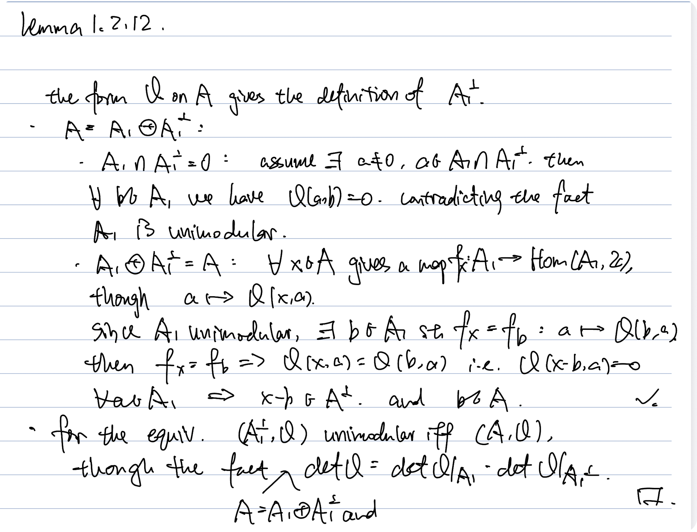
- Theorem 1.2.15 (Fact)
- A\neq 0. 若 \sigma\left(Q\right)=0, 那么存在一个非零元 \alpha\in A 满足 Q\left(\alpha,\alpha\right)=0.
- Lemma 1.2.16:
- Q unimodular, 若 \sigma\left(Q\right)=0, 则 Q 可以被完全分类:
- 若 Q 是偶的, 则存在 k\in \mathbb{N} 使得 Q\cong kH. 其中 H=\left(\begin{matrix}0&1\\1&0 \end{matrix}\right)
- 若 Q 是奇的, 则存在 l\in \mathbb{N} 使得 Q\cong l\langle1\rangle\oplus l\langle-1\rangle.
- 证明:
- Q unimodular, 若 \sigma\left(Q\right)=0, 则 Q 可以被完全分类:
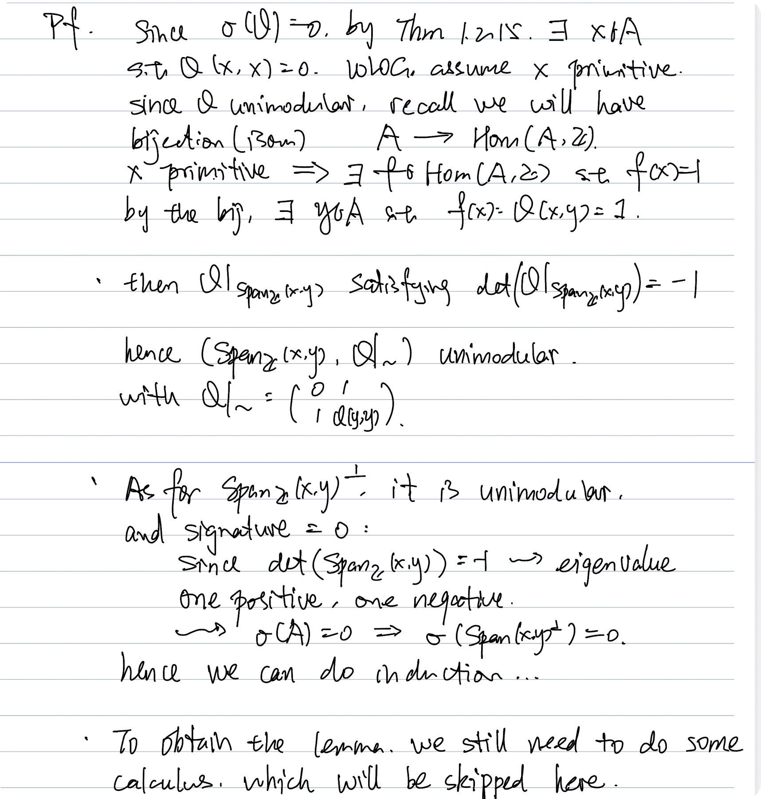
- Calculus: Q=\left(\begin{matrix}0&1\\ 1&k\end{matrix}\right)
- 若 k 是偶数, 则 Q\cong H
- 若 k 是奇数, 则 Q\cong \langle1\rangle \oplus \langle-1\rangle
- 无论 k 取何值, Q\oplus \langle-1\rangle\cong 2\langle-1\rangle\oplus \langle1\rangle
- Theorem 1:
- 不定型 unimodular form 由 rank, signature, parity 完全分类.
- 证明:
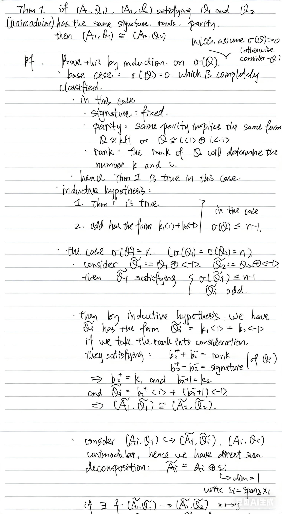
2.1.2 Proof of Thm 2
一个 form Q 的 \left(\text{rank, signature, parity}\right) 给出了映射 \{ \text{indefinite unimodular form } Q\}\to \mathbb{N}\times \mathbb{Z}\times \mathbb{Z}/2 根据 Thm 1, 我们知道这个映射是单射。我们还需要考虑这个映射的像。
这个 image 是 RHS 的子集, 由如下两条限制给出: 1. 由于 \text{rk}\left(Q\right)=b_2^++b_2^-,\sigma\left(Q\right)=b_2^+ -b_2^-, 我们有 |\sigma(Q)| \leq \operatorname{rk}(Q), \text{rk}\left(Q\right)\equiv \sigma\left(Q\right)\pmod{2} 2. 如果 Q 是 even 的, 则 \sigma\left(Q\right)\equiv0 \pmod{8}. 这条限制由下面的引理给出.
- Lemma 1.2.20
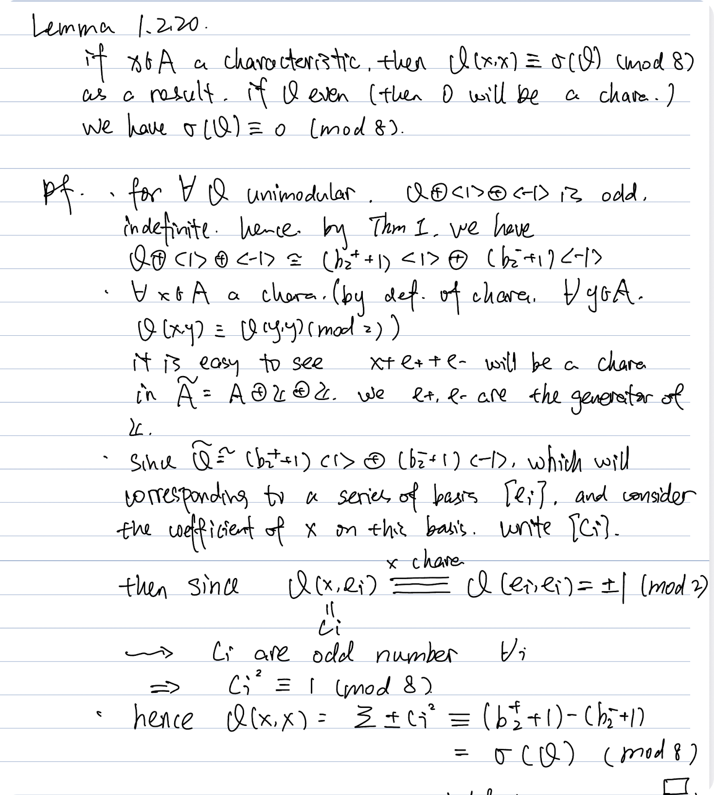
- E_8 矩阵
- E_8 矩阵定义为 E_8 = \begin{pmatrix} 2 & 1 & 0 & 0 & 0 & 0 & 0 & 0 \\ 1 & 2 & 1 & 0 & 0 & 0 & 0 & 0 \\ 0 & 1 & 2 & 1 & 0 & 0 & 0 & 0 \\ 0 & 0 & 1 & 2 & 1 & 0 & 0 & 0 \\ 0 & 0 & 0 & 1 & 2 & 1 & 0 & 1 \\ 0 & 0 & 0 & 0 & 1 & 2 & 1 & 0 \\ 0 & 0 & 0 & 0 & 0 & 1 & 2 & 0 \\ 0 & 0 & 0 & 0 & 1 & 0 & 0 & 2 \end{pmatrix}
- unimodular form, rank=8: \det\left(E_8\right)=1
- positive definite: 计算顺序主子式
- signature=8: 由正定
- even: 直接从对角线读出.
我们说明上面的这两条限制给出的恰好为映射的像集。（从而我们得到了双射，得到了 indefinite unimodular form 的完全分类） - 如果是奇的, 我们可以直接取 b_2^+\langle1\rangle\oplus b_2^-\langle-1\rangle - 如果是偶的，我们使用 H,E_8 构造这个矩阵 - H 满足 rank=2, signature=0 - E_8 满足 rank=8, signature=8. - 假设已经给定了 \sigma\left(Q\right),\text{rk}\left(Q\right). 由于直和 H 不会改变 signature, 我们使用 E_8 来调整 signature, 使用 H 来调整 rank. - 由于 \sigma\left(Q\right) 总是 8 的倍数，它一定能被 E_8 实现: \frac{\sigma\left(Q\right)}{8}E_8 - 由于 \sigma\left(Q\right) 和 \text{rk}\left(Q\right) 之间的差是偶数, 这个差距总能通过直和 H 来补齐: \frac{\text{rk}\left(Q\right)-|\sigma\left(Q\right)|}{2}H. - 于是我们可以构造 Q\cong \frac{\sigma\left(Q\right)}{8}E_8\oplus \frac{\text{rk}\left(Q\right)-|\sigma\left(Q\right)|}{2}H
2.1.3 Examples
相交型是光滑流形的同伦不变量, 仅仅使用相交型, 我们就可以区分一些常见的流形.
- 计算相交型
- 下面都是单连通的 4 mfld.
- S^2\times S^2:
- 有两个生成元 S^2\times \{ pt \},\{ pt \}\times S^2
- 相交数为+1: 乘积流形的定向由两个分量上的定向给出.
- Q_X=H=\left(\begin{matrix}0&1\\ 1&0\end{matrix}\right)
- \#_k S^2\times S^2: Q_X=kH, k 个 H 的直和.
- \mathbb{CP}^2,\overline{\mathbb{CP}^2}: Q_{\mathbb{CP}^2}=\langle1\rangle,Q_{\overline{\mathbb{CP}^2}}=\langle-1\rangle.
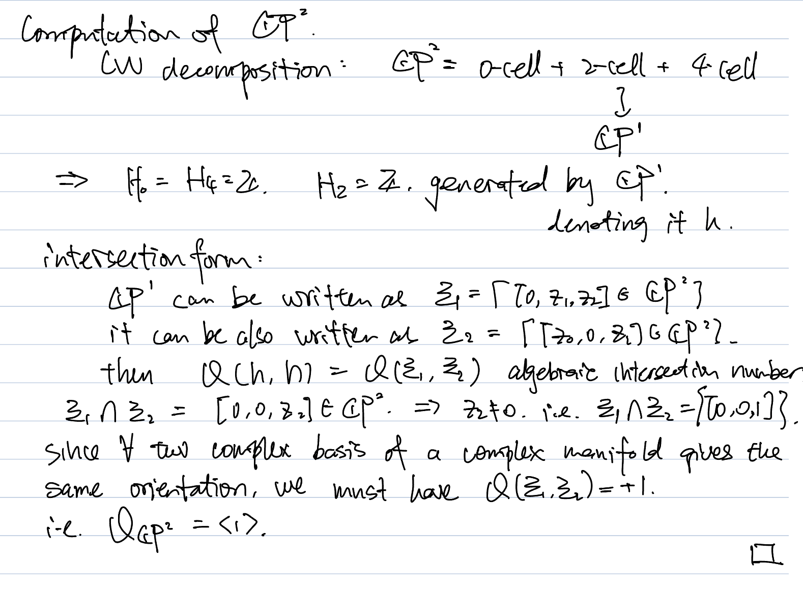
- 说明: 关于复流形的定向
- 两组复基底在基变换过程中会差一个复矩阵, 而将这个 $n\times n$ 的复矩阵视为一个 $2n\times 2n$ 的实矩阵(它一定长这样: $M = \begin{pmatrix} A & -B \\ B & A \end{pmatrix}$), 这个实矩阵的行列式一定大于 0.
- $\overline{\mathbb{CP}^2}$ 是我们将 $\mathbb{CP}^2$ 当作实流形反转定向之后得到的(比如, 对于某一个复分量取共轭), 这会破坏它的复结构, 此时它不再是复流形.
- 它的 handle 分解我们之后再介绍.
- $\#_k \mathbb{CP}^2 \#_l \overline{\mathbb{CP}^2}$: $Q_X=k\langle1\rangle\oplus l\langle-1\rangle$.- 区分 S^2\times S^2 和 \mathbb{CP}^2\# {\mathbb{CP}^2}
- 此时同调群是相同的。
- S^2\times S^2 的 handle 分解:
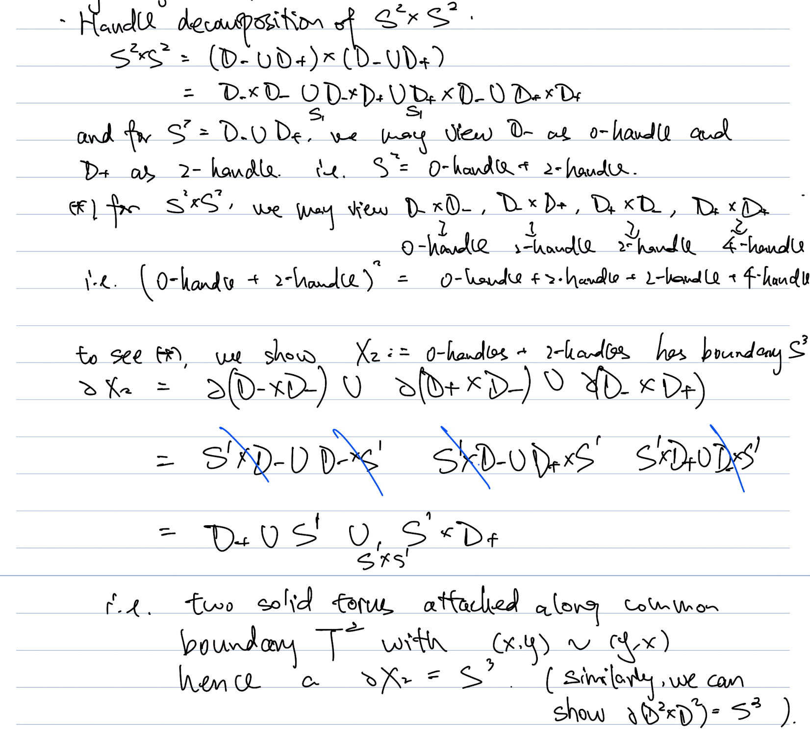
- 利用 signature: 前者是 0, 后者是 2- 区分 S^2\times S^2 和 \mathbb{CP}^2\#\overline{\mathbb{CP}^2}
- 此时 signature 相同
- 利用 parity, S^2\times S^2 是 even 的, \mathbb{CP}^2\#\overline{\mathbb{CP}^2} 是 odd 的.
- 区分 \# S^2\times S^2 和 \#\mathbb{CP}^2\#\overline{\mathbb{CP}^2}
- 一定同伦不等价
2.1.4 More Results: Oriented Cobordism Group
\Omega_*^{SO} \otimes \mathbb{Q} \cong \mathbb{Q}[x_4, x_8, x_{12}, \dots] 低维的结果: - \Omega_0^{SO} \cong \mathbb{Z}：由点的个数（带符号）生成。 - \Omega_1^{SO} = 0：任何闭曲线（圆环的并）都是某个曲面（带有洞的圆盘）的边界。 - \Omega_2^{SO} = 0：任何闭定向曲面都是某个 3 维柄体（Handlebody）的边界。 - \Omega_3^{SO} = 0：（由 Rokhlin 证明）。任何闭定向 3-流形都是某个定向 4-流形的边界。 - \Omega_4^{SO} \cong \mathbb{Z}：由 \mathbb{CP}^2 生成 (它的 signature 为 1) - 我们实际上有同构 \sigma: \Omega_4^{SO}\to \mathbb{Z}, [M]\mapsto \sigma(M) - M bound 一个 5 mfld 当且仅当 \sigma(M)=0.
3 Main Results on Simply Connected 4-Manifolds
我们可以通过 4 mfld 的不变量来评估 4 mfld 的复杂度. 我们将在下文中看到, 仅仅是4 mfld 的基本群给出的复杂度就会造成算法不可解问题. 于是, 本节中, 我们将 4 mfld 限制为单连通的.
这一部分, 我们介绍 intersection form 在分类单连通流形上的应用和主要结果. 注意: 本节中我们只考虑单连通 4 mfld!
分类问题 - 存在性: 给定 Q, 是否存在这样的 (光滑) 4 mfld X 使得 Q_X=Q? - 唯一性: 给定 Q, 有多少个这样的 (光滑) 4 流形 X 使得 Q_X=Q?
3.1 Homology Group
- UCT
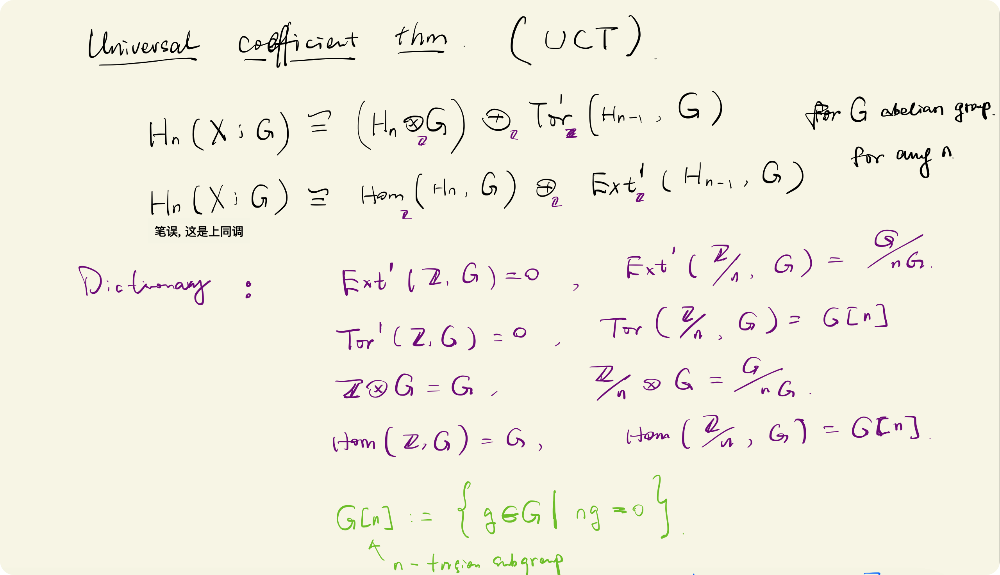
- 同调群和同伦群:
- 我们使用 Poincare 对偶和万有系数定理来计算同调群. 使用 Hurewicz 定理来计算同伦群.
- H_0,H^0
- H_0\left(X\right)=\mathbb{Z}: 通过连通性
- H^0\left(X\right)=\mathbb{Z}: 万有系数定理
- H_4, H^4
- H_4=\mathbb{Z}: Poincare 对偶
- H^4=\mathbb{Z}: 万有系数定理 (or PD)
- \pi_1,H_1,H^1
- \pi_1=0: 我们考虑单连通流形
- H_1=0: Hurewicz 定理
- H^1=0: 万有系数定理
- H_3,H^3
- 均为 0, 对 H_1 的结果使用 Poincare 对偶.
- H_2,H^2
- H^2\cong H_2: Poincare 对偶
- H_2 是有限生成的自由阿贝尔群:
- 由于我们考虑的流形是紧的 (closed), H_2\cong \mathbb{Z}^r: 万有系数定理 H^2\left(X\right)\cong Hom\left(H_2\left(X\right),\mathbb{Z}\right)
- \pi_2
- \pi_2\cong H_2: Hurewicz 定理
- 由于 H_2 未必是 0, 我们不知道更高阶同伦群的信息.
- 汇总:
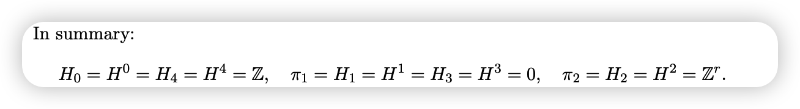
即对于单连通闭的四维流形, 其同调群只有 H_2 (和 H^2) 不平凡.- 如果流形 M 是带边流形, 则庞加莱对偶写成 Lefschetz Duality (LD): H_2\left(M;\mathbb{Z}\right)\cong H^2\left(M,\partial M;\mathbb{Z}\right), 以及 H_2(M,\partial M;\mathbb{Z})\cong H^2(M;\mathbb{Z}). 此时:
- H_4=H^4=0:
- H_4=0:
- 存在没有 4-handle 的 handle 分解.
- 依赖结果: 对于紧的, 连通的光滑流形 M^n, 若其无边界, 则可以选择 handle 分解使其仅有一个 0-handle (对偶的, 一个 n-handle). 若其有边界, 则可以选择 handle 分解使其没有 0-handle (对偶的, 没有 n-handle).
- Sketch: 利用 handle cancel 以及连通性质.
- H^4=0:
- 使用 LD: H^4(M) \cong H_0(M, \partial M) = 0
- 右侧为零是因为 M,\partial M 处于相同的连通分支中。
- H_4=0:
- H_2 未必自由:
- 此时我们不再有 H_2\cong H^2.
- H_3,H^3 未必是零:
- H_1,H^1 是零+LD 只能得到 H_3\left(M,\partial M\right)=0, H^3(M,\partial M)=0
- H_4=H^4=0:
3.2 Homotopy Type
我们之前提到, 对于单连通的 4 mfld, X 的同调群中只有 H_2 是不平凡的, 我们在其上定义了相交型. 本节我们证明, 4 mfld X 的同伦型完全由其上的相交型决定.
- Thm: (Whitehead)
- 定理: X_1,X_2 是两个单连通的 4 mfld, X_1 和 X_2 同伦等价当且仅当 Q_{X_1} 和 Q_{X_2} 是等价的.
- 证明:
- 定理的一侧是显然的, 我们说明 Q_X 可以决定 X 的同伦型. 证明大致思路是从 Q_X 出发, 构造复形 \tilde{X}, 并证明复形 \tilde{X} 和 X 同伦. (即我们找了一个中间的拓扑空间, 证明 X_1,X_2 都同伦于它)
- X-B^4 的同伦型
- 利用 Mayer-Viector 序列, 可以证明挖去 B^4 在同调上去掉了 X 的四维同调群. 此时 H_0=\mathbb{Z},H_2=\mathbb{Z}^r,H_{else}=0.
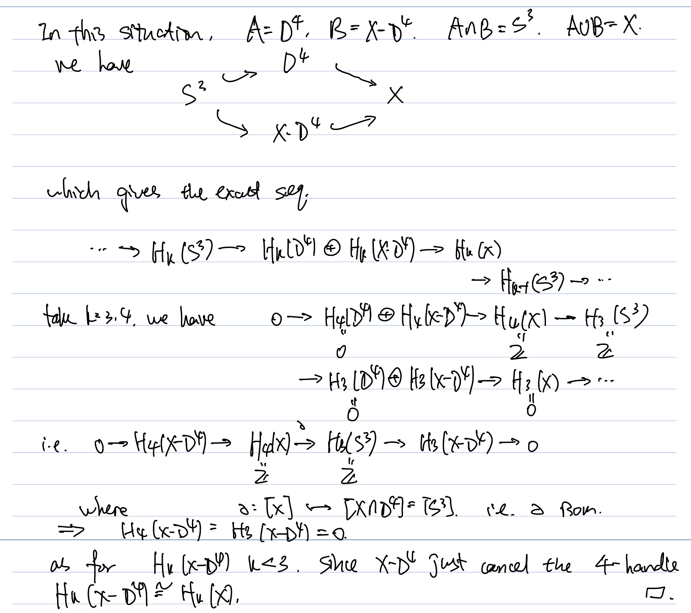
- $X-B^4$ 同伦于 $\bigvee_{i=1}^r\mathbb{S}^2$: 注意到两者都是单连通的, 且同调群同构, 为了使用同调版本的 whitehead 定理, 我们还需要构造从 $X-B^4$ 到 $\bigvee_{i=1}^r\mathbb{S}^2$ 的映射. 注意到我们有 $H_2\left(X-B^4\right)\cong \pi_2\left(X-B^4\right)$, 且同调群的生成元对应着球面映射的同伦类 (Hurewicz 定理)。因此，我们可以选取一组生成元对应的映射 $f_i: S^2 \to X-B^4$，并将它们组合成一个映射 $f: \bigvee_{i=1}^r S^2 \to X-B^4$。这个映射诱导了同调群的同构。根据同调版本的 Whitehead 定理，这个映射就是同伦等价。
- $X$ 的同伦型
- 我们已经证明了 $X-B^4$ 同伦于 $\bigvee_{i=1}^r\mathbb{S}^2$, 要寻找 $X$ 的同伦型，我们需要考虑如何将 $B^4$ 粘回去。这涉及到一个粘接映射 $\phi: S^3 \to \bigvee_{i=1}^r S^2$，它描述了 $B^4$ 的边界如何附着在 $\bigvee_{i=1}^r S^2$ 上。(注意, 粘接的结果不再是流形, 仅仅是 CW 复形)
- 这个粘接映射 $\phi$ 的同伦类由相交形式 $r\times r$ 阶矩阵 $Q_X$ 所决定。
- 对角线上的元素: 对角线上的元素 $Q_{ii}$ 对应了第 $i$ 个 $S^2$ 的同伦群 $\pi_3\left(S^2\right)$. 对于映射 $h:S^3\to S^2$, 我们在 $S^2$ 上任取一点 $x$, 记它在 $h$ 下的原像为 loop $L$, 则 $Q_{ii}$ 就对应了 $L$ 的自相交数.
- 只有 framed knot 才能定义自相交数, 而映射 $h$ 天然给出了 $L$ 上的一个 framing: 我们在 $S^2$ 上再取一点 $x'$, 并记 $x'$ 在 $h$ 下的原像 $L'$, 则 $L$ 的自相交数可以被定义为 $lk\left(L,L'\right)$.
- loop $L$ 自相交数的含义: 这实际上对应了 $L$ bound 的曲面的自(代数)相交数 ($L$ 在 $B^4$ 上 bound disk 是因为 $B^4$ 单连通). 我们考虑 $\left(S^3,L\right)\subset (B^4,D^2)$, 其中前面的 pair 是后面的 pair 的边界. 我们有结果: **$L$ 的自相交数等于 $D^2$ 在 $B^4$ 中的自(代数)相交数.** 直观上理解: 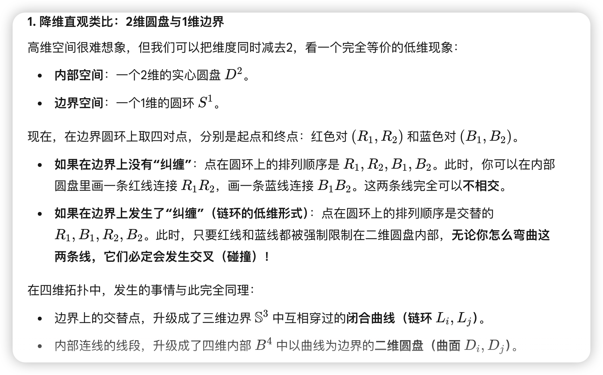
- 关于上面的论述: knot 的相交数可以理解为一个 knot 和另一个 knot 的 Seifert surface 之间的相交数 (这里也有横截性定理: 维数和为 3). 而 Seifert surface 和 knot 在 $B^4$ 中 bound 的 disk 会在 $B^4$ 中一起围出一个落在 $B^4$ 中的闭的可定向曲面. (从而代数相交数一样)
- 非对角线上的元素: 非对角线上的元素 $Q_{ij}$ 对应了第 $i$ 个 $S^2$ 和第 $j$ 个 $S^2$ 的映射 $h_i, h_j: S^3 \to S^2$ 所诱导的环路 $L_i$ 与 $L_j$ 的环绕数 $lk(L_i, L_j)$。且与对角线上的元素类似，这个环绕数也对应了 $B^4$ 中两个圆盘 $D_i^2$ 和 $D_j^2$ 的相交数.
- 综上, 给定相交形式 $Q$, 我们可以唯一确定粘接映射 $\phi:S^3\to \bigvee_{i=1}^r S^2$, 从而给出 CW 复形 $\bigvee S^2\cup_{\phi}B^4$, 根据上面的论述, 它同伦于 $X$.
- 注: 在上述构造的过程中, 我们把 4 mfld 的同伦型写成了 2-cell 和 4-cell 组合的形式. **而相交型的信息完全蕴含在 4-cell 中**, 在证明中我们通过 loop 在 $D^4$ 中 bound 的 disk 的相交数给出了矩阵 $Q$.3.3 Homeomorphism Type
我们已经知道对于单连通的 4 mfld, 相交型可以决定同伦型, 自然的问题是: 能否决定同胚型 (拓扑型).
- 比较弱的回答:
- GPC 4 (四维庞加莱定理): 四维同伦球面是拓扑球面. 于是若单连通的 X 满足 Q_X=0, 则它是拓扑球面.
- Thm 1.2.27 (Freedman)
- 定理:
- 任意 unimodular 对称双线性形式 Q, 存在单连通闭 4 mfld X s.t. Q_X=Q
- 如果 Q 是偶的, 则 X 在同胚意义下是唯一的.
- 若 Q 是奇的, 则满足 Q_X=Q 的 X 有两种同胚型, 最多一个同胚型上有光滑结构.
- 这个定理同时回答了存在性和唯一性.
- 推论: GPC 4
- 若 X\simeq S^4 (同伦等价), 对应的幺模形式 Q_X=0, 是偶的. 由 Freedman 的定理, 立刻得到 X 同胚于 S^4.
- 推论:
- 单连通光滑 4 mfld 的拓扑型由 unimodular form 完全决定. 即映射 Q:\{ \text{单连通光滑 4mfld} \}/\text{Homeo}\to \{ \text{unimodular form} \}/\text{Congruent},X\mapsto Q_X 是单射. (如果两个光滑 4 mfld 有相同的 unimodular form, 则它们一定是同胚的.)
- 定理:
3.4 Diffeomorphic Type (open)
分类问题在光滑情形下的表述: - 存在性: 什么样的 Q, 它对应的 X (可能对应两个 X) 上存在光滑结构? - 唯一性: 如果 Q 对应的 X (可能对应两个) 上存在光滑结构, 那么拓扑流形 X 上的光滑结构是否唯一? 根据 Freedman 的结果, 这几乎等价于分类拓扑 4 mfld 上的光滑结构.
- Conjecture: SPC 4 (唯一性问题)
- Q=0 , 由 Freedman 的结果我们知道 Q 一定对应唯一的拓扑 X (同胚于 $S^4), 它上面的光滑结构是否唯一?
3.4.1 Results of Existence
- Thm 1.2.29 (Rohlin)
- 如果 Q 是偶的, 且可以被某个光滑 4 mfld X 实现, 则 \sigma\left(Q\right)\equiv 0 \pmod{16}
- 推论: E_8 流形 (唯一的那个满足 Q_X=E_8 的拓扑流形) 上不具有光滑结构.
- Thm 1.2.30 (Donaldson)
- 如果 Q 能被某个光滑 4 mfld X 实现, 且 Q definite, 则 Q 等价于对角矩阵.
- 换句话说, 在所有 definite form 中, 只有那些对角矩阵可能被光滑 4 mfld 实现.
- 虽然 definite form 的分类是复杂的, 但能被光滑流形实现的那些是简单的.
- Q indefinite 的情形:
- Recall: 我们完全分类了 indefinite unimodular forms.
- 如果 Q odd: Q 等价于 m\langle 1\rangle \oplus n\langle -1\rangle, 它可以被带有光滑结构的流形 \left(\#_m \mathbb{CP}^2\right)\# \left(\#_n \overline{\mathbb{CP}^2}\right) 实现.
- 如果 Q even: Q\cong \frac{\sigma\left(Q\right)}{8}E_8\oplus \frac{\text{rk}\left(Q\right)-|\sigma\left(Q\right)|}{2}H, 关于系数的取值范围, 我们有下面的结果:
- Thm 1.2.31 (\frac{10}{8})
- 如果 Q 是不定的, 偶的 (从而可以分解为 2kE_8\oplus lH, 这里出现 2k 是因为 Rohlin 的定理), 且能被某个光滑 4 mfld 实现, 则系数 k,l 满足 l\geq2|k|+1.
- 为什么叫 10/8？ 因为流形的第二贝蒂数 b_2 = 2l + 16|k|，符号差 |\sigma| = 16|k|。将 l \ge 2|k| + 1 代入，可以推导出 b_2 \ge \frac{10}{8}|\sigma| + 2。
- Conjecture (\frac{11}{8})
- 上述限制条件实际上可以写成 l\geq3|k| (open problem)
3.4.2 Results of Uniqueness
我们几乎只有负面的结果。
- 非紧的 4 mfld:
- 对于 n\neq4, \mathbb{R}^n 上有唯一的光滑结构.
- \mathbb{R}^4 上存在不可数多个光滑结构.
- 紧的 4 mfld:
- 以下空间上是否有怪异的光滑结构? (open)
- S^4,S^2\times S^2,\mathbb{CP}^2, \overline{\mathbb{CP}^2},\mathbb{CP}^2\#\overline{\mathbb{CP}^2}
- 是否存在有有限多光滑结构的闭 4 mfld? (open)
- 以下空间上是否有怪异的光滑结构? (open)
正面的”结果”: 稳定意义下是唯一的
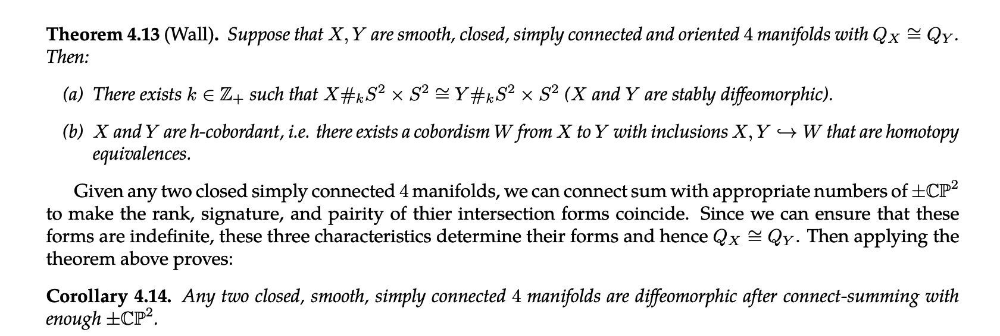
4 Fundamental Group of Smooth 4-Manifold
4mfld 学科的核心问题是分类光滑四维流形. 基本群是分类光滑 4 mfld 的第一个”复杂度”. 这一小节, 利用基本群我们说明: 光滑 4-mfld 的完全分类是一个不可解问题.
注: 这个证明有两种写法
Thm 1.2.2 (Markov)
- 定理:
- 基本群映射 \pi_1:\{\text{closed oriented 4 mfld}\}\to \{\text{finitely generated group}\}, X\mapsto \pi_1\left(X\right) 是满射。即对于任意有限生成群 G，都能找到一个闭的定向的 4-mfld，它的基本群实现这个 G。
- 更一般的, 任意 n\geq4, 任意有限生成群 G, 都存在一个闭的定向的 mfld M^n, 它的基本群实现这个 G. (我们证明这个)
- 说明:
- 假设 G=\langle g_1,\cdots,g_k|r_1,\cdots,r_l\rangle
- 我们知道, handle 分解在同伦中的对应是胞腔分解, 证明的基本思路也是利用 1 handle 构造生成元, 利用 2 handle 商掉关系. 但是这里要求找到的流形 M^n 是闭流形, 即我们得到的流形得是无边的, 这引出了两种证明方式.
- 构造 1:
- 构造 n+1 维流形 W^{n+1}, 然后取它的边界 M:=\partial W. 这样得到的 M 显然是不带边的.
- 构造: 我们构造 W^{n+1}, 它上面只有 0,1,2 handle.
- 其中 1 handle 对应于生成元 g_i, 在 D^{n+1} 上粘接 k 个 1 handle 会得到 \#_kS^1\times D^n, 它是 k 个 S^1\times D^n 的连通和. 利用 Seifert-Van Kampen 定理，连通和在基本群上对应自由积.
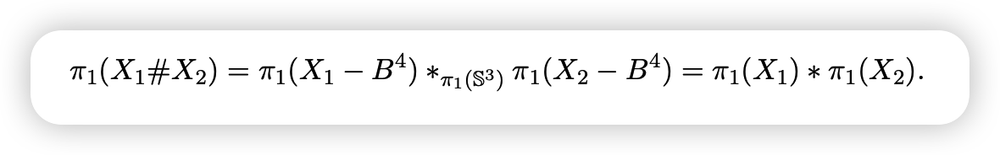
Seifert-Van Kampen 定理示意 - 2 handle 对应商掉的关系.
- 于是这样得到的 W 的基本群就是 G.
- 取 M:=\partial W. 我们说明 \pi_1(M)\cong \pi_1(W), 只要说明两者的 H_1 是一样的.
- 我们可以将 W 看作是从 \emptyset 到 M 的配边, 这个过程中粘接了0-handle, 1-handles, and 2-handles.
- 利用 handle 分解的对偶观点, W^{n+1} 给出了从 M 到 \emptyset 的配边, 这个过程中我们在 M\times I 上粘接了 (对偶的) n+1 handle, n handle, n-1 handle, 这里 n\geq4, 于是 n-1\geq3, 注意到粘接 handle 在代数上会给出胞腔复形上的微分映射, 故 3 handle 不会改变 H_1, 于是我们有 H_1(M)\cong H_1(W).
- 因此 \pi_1(M)\cong\pi_1(W)\cong G.
- 注意到这个证明在 n+1 阶流形上做 handle 粘接, 当然也可以表述为在 n 阶流形上做 surgery, 这恰为讲义 MATH 283 A 中的表述.
- 构造 2:
- 我们直接在 n 维上构造, 使用 double 操作消除边界.
- 使用和上述一样的方法构造一个带边界的 n 维流形 M_0，使得 \pi_1(M_0) \cong G. 然后取 M 为 M_0 的双重（double），即 M = M_0 \cup_{\partial M_0} \overline{M_0}.
- 基本群同构: 我们可以将 double 操作理解为粘接对偶的 handle. M_0 通过在 \emptyset 上粘接 0,1,2 handle 给出了从 \emptyset 到 \partial M_0 的配边. 对偶的, \overline{M_0} 通过在 -\partial M_0\times I 上粘接 n, n-1, n-2 handle 给出了从 -\partial M_0 到 \emptyset 的配边.
- 注意, 这里 n-2 可能会取到 2, 但是我们可以说明, 这里的 2 handle 的粘接球面是特殊的 (在 1 handlebody 的边界上 bound disk), 从而不会影响到 H_1. (在 Kirby diagram 上直观看到).
- 两种构造的一致性:
- 我们可以将 double 操作看作对高维流形取边界.
- 假设 M 是带边流形, 则 double D M 就是对 M\times I 取边界, 这里 M\times I 作为 n+1 维流形有着和 M 完全一致的 handle 分解. (因为 I 是 0 handle).
- 示意图:
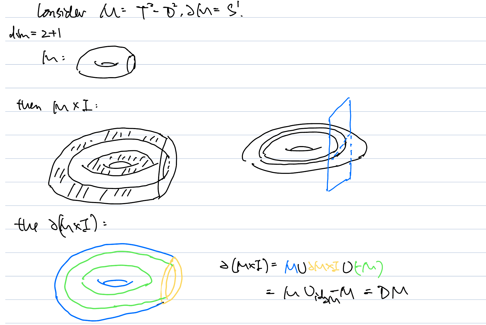
Double 操作示意图
- 定理:
我们还想回答下面的问题:
是否存在一种（能在有限步骤内完成）的算法，能区分任意两个光滑 4 mfld W_1,W_2 是否（微分）同胚？
答案是不存在.
Thm (Markov)
- 不存在能够判断任意两个光滑 4 mfld W_1,W_2 是否（微分）同胚（能在有限步骤内完成）的算法。
证明:
- 用反证法, 假设存在这样的算法, 则我们可以得到判断有限表示群 G 是否平凡的（在有限步骤内完成）算法. 根据 Novikov-Boone 的定理, 不存在这样的算法.
- 固定一个群 G_0=\{e\} 平凡群. 考虑任意有限表示群 G_1, 并构造一个四维流形 W_1', 使得 \pi_1\left(W_1'\right)=G_1. 将 W_1' 和 \mathbb{CP}^2 \# \bar{\mathbb{CP}^2} 做连通和得到 W_1（从而得到 indefinite and odd 的相交形式），这个操作不会改变它的基本群. 我们将另一个流形取为 W_0:=a\mathbb{CP}^2\#\bar{b\mathbb{CP}^2}, 我们有 \pi_1\left(W_0\right)\cong G_0.
- 此时我们得到了两个流形, 它们的相交形式都是不定的, 奇的. 于是这两个相交形式都是对角的, 对角线上都是 \pm1. 我们可以取 a,b 使得 W_0,W_1 有相同的相交型.
- 我们有命题: W_1\simeq W_2\text{ (同伦等价)} \iff G_1\cong G_0.
- \Rightarrow: 显然.
- \Leftarrow: G_1\cong G_0 则 W_1 单连通, 由 Whitehead 的定理它们同伦等价.
- 还有命题: W_1\cong W_2 \text{ (同伦等价)}\Rightarrow W_1\simeq_S W_2（稳定微分同胚），即存在 N, 使得 W_1\# (\#^lS^2\times S^2)\cong W_2\#\left(\#^lS^2\times S^2\right)（微分同胚）.
- 由假设, 我们有一种算法可以区分
W_1\# (\#^lS^2\times S^2),\quad W_2\#\left(\#^lS^2\times S^2\right)
假设不微分同胚, 则 $G$ 不是平凡群; 假设微分同胚, 计算两边基本群, 则 $G$ 是平凡群. 至此得到矛盾.- 另一种基于 Kirby Calculus 的证明:
- 书上 Exercises 5.1.10 (c)
5 Appendix
5.1 handle 分解的 dual
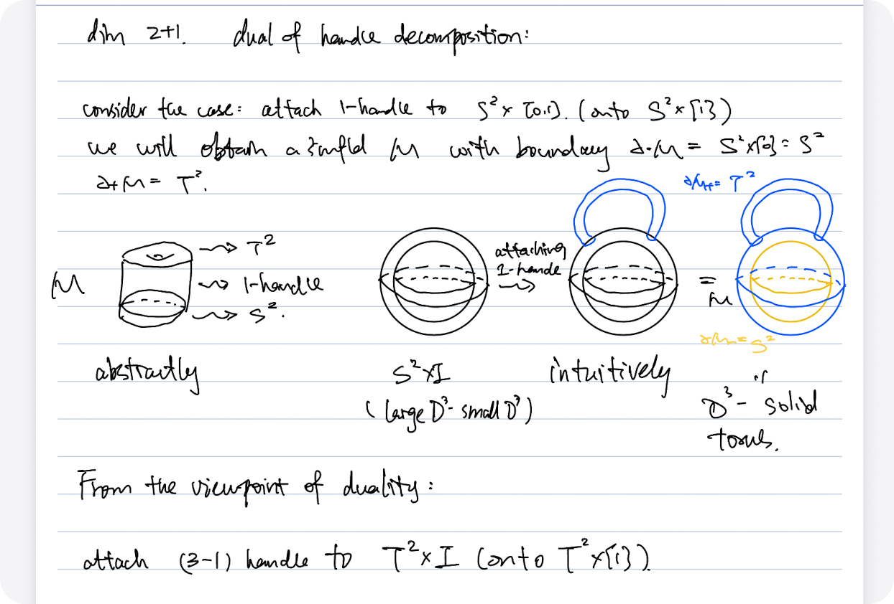
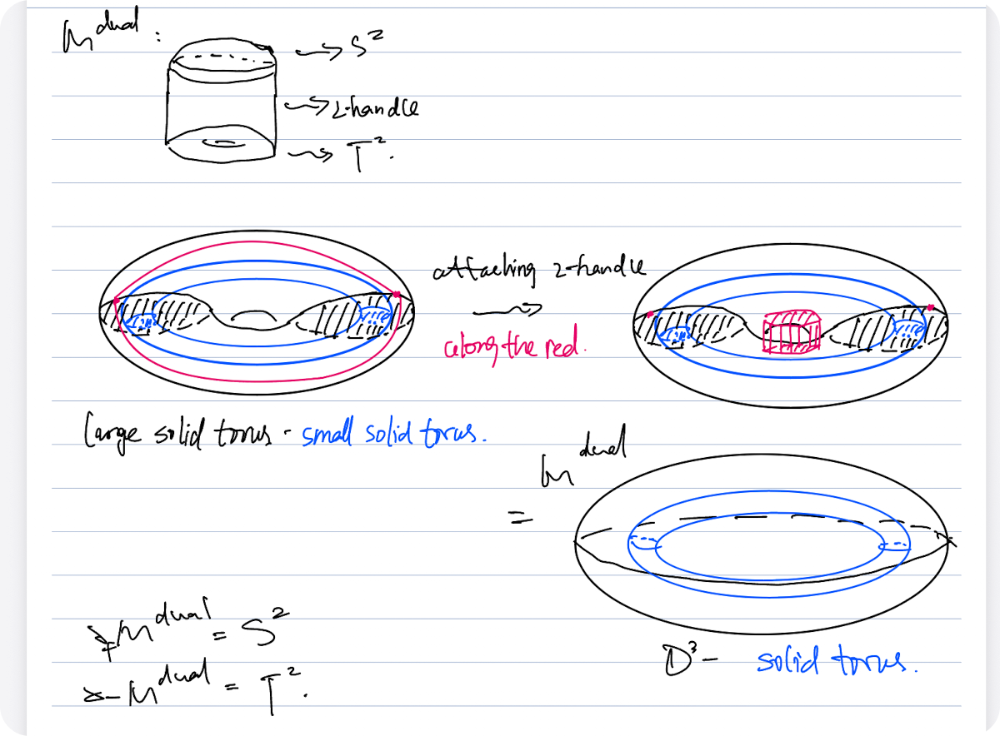